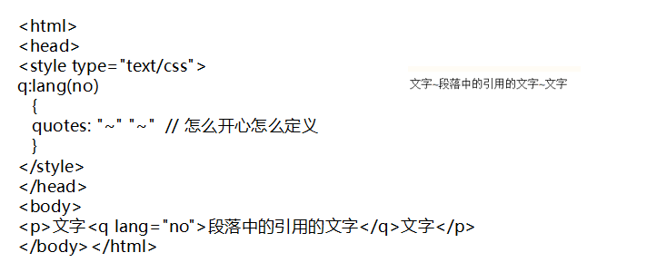
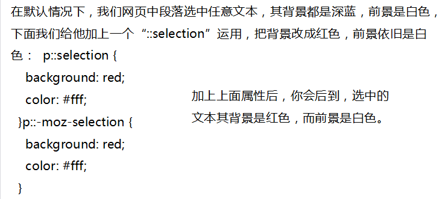
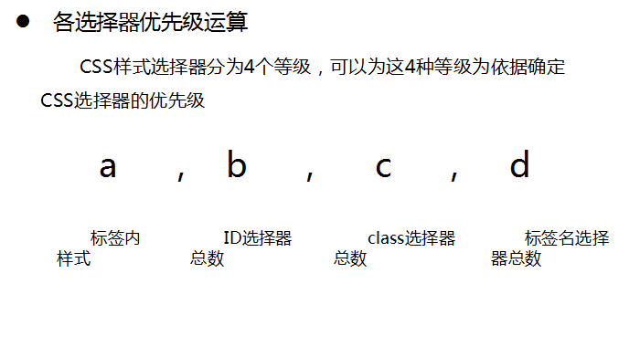

1、CSS3的概念和优势
CSS即层叠样式表（Cascading StyleSheet）
CSS3是CSS技术的升级版本，CSS3语言开发是朝着模块化发展的
模块包括： 盒子模型、列表模块、超链接方式 、语言模块 、背景和边框 、文字特效 、多栏布局等
CSS 用于控制网页的样式和布局。
CSS3 是最新的 CSS 标准。
CSS3 完全向后兼容，因此您不必改变现有的设计。浏览器通常支持 CSS2。
选择器是css3中的一个重要内容。使用它可以大幅度提高开发人员书写或修改样式表时的工作效率。
在HTML中，通过各种各样的属性，我们可以给元素增加很多附加信息
在css3中，增加了如下所示的几种属性选择器，使得属性选择器有了通配符的概念。
2、渐进增强和优雅降级的简介(扩展)
渐进增强（progressive enhancement）：一开始只构建站点的最少特性，然后不断地对不同的浏览器追加不同的功能
优雅降级（graceful degradation）：一开始就构建站点的完整功能，然后针对浏览器进行测试和修复
“优雅降级”和“渐进增强”都关注于同一网站在不同设备里不同浏览器下的表现程度。 关键的区别则在于它们各自关注于何处，以及这种关注如何影响工作的流程。
“优雅降级”观点认为应该针对那些最高级、最完善的浏览器来设计网站。而将那些被认为“过时”或有功能缺失的浏览器下的测试工作安排在开发周期的最后阶段，并把测试对象限定为主流浏览器（如 IE、Mozilla 等）的前一个版本。
在这种设计范例下，旧版的浏览器被认为仅能提供“简陋却无妨 (poor, but passable)” 的浏览体验。你可以做一些小的调整来适应某个特定的浏览器。但由于它们并非我们所关注的焦点，因此除了修复较大的错误之外，其它的差异将被直接忽略。
“渐进增强”观点则认为应关注于内容本身。请注意其中的差别：我甚至连“浏览器”三个字都没提。
内容是我们建立网站的诱因。有的网站展示它，有的则收集它，有的寻求，有的操作，还有的网站甚至会包含以上的种种，但相同点是它们全都涉及到内容。这使得“渐进增强”成为一种更为合理的设计范例。这也是它立即被 Yahoo! 所采纳并用以构建其“分级式浏览器支持 (Graded Browser Support)”策略的原因所在。
区别：
优雅降级即功能衰减是从复杂的现状开始，并试图减少用户体验的供给，而渐进增强(pe)则是从一个非常基础的，能够起作用的版本开始，并不断扩充，以适应未来环境的需要。功能衰减意味着往回看；而渐进增强则意味着朝前看，同时保证其根基处于安全地带。
3、CSS3 选择器——属性选择器
1、E[attr]：只使用属性名，但没有确定任何属性值；
2、E[attr="value"]：指定属性名，并指定了该属性的属性值；
3、E[attr~="value"]：指定属性名，并且具有属性值，此属性值是一个词列表，并且以空格隔开，其中词列表中包含了一个value词，而且等号前面的“〜”不能不写
4、E[attr^="value"]：指定了属性名，并且有属性值，属性值是以value开头的；
5、E[attr$="value"]：指定了属性名，并且有属性值，而且属性值是以value结束的
6、E[attr*="value"]：指定了属性名，并且有属性值，而且属值中包含了value；
7、E[attr|="value"]：指定了属性名，并且属性值是value或者以“value-”开头的值（比如说zh-cn）;
如果你希望选择有某个属性的元素，而不论这个属性值是什么，你就可以使用这个属性选择器。
.demo a[id] {background: blue; color:yellow;font-weight:bold;}
上面是单一属性的使用，你也可以使用多属性进行选择元素，如E[attr1][attr2], 这样只要是同时具有这两属性的元素都将被选中：
.demo a[href][title] {background: yellow; color:green;}
IE6不支持这个选择器
E[attr="value"]选择器和E[attr]选择器，从字面上就能很清楚的理解出来，E[attr="value"]是指定了属性值“value”，而E[attr]只是选择了有对应的属性，并没有明确指其对应的属性值"value"，这也是这两种选择器的最大区是之处。从而缩小了选择 围，更能精确选择自己需要的元素。
.demo a[id="first"] {background: blue; color:yellow;font-weight:bold;}
E[attr="value"]属性选择器也可以多个属性并写，进一步缩小选择范围：
.demo a[href="http://www.w3cplus.com"][title] {background: yellow; color:green;}
对于E[attr="value"]这种属性值选择器有一点需要注意：属性和属性值必须完全匹配，特别是对于属性值是词列表的形式时。
例：<a href="" class="links item" title="open the website">7</a>
例如上面的代码，如果你写成：
.demo a[class="links"]{color:red};/*这是一种写法不能和上面的html所匹配*/
上面的属性选择器并不会和上在的html匹配,因为他们的属性和属性值没有完全匹配，需要改成如下所示的代码，才能正确匹配：
.demo a[class="links item"]{color:red};/*这样才是匹配的，记得中间的空格不能少的哟*/
IE6浏览器不支持这种选择器
如果你想根据属性值中的词列表的某个词来进行选择元素，那么就需要使用这种属性选择器：E[attr~="value"]，这种属性选择器是属性值是一个或多个词列表，如果是列表时，他们需要用空格隔开，只要属性值中有一个value相匹配就可以选中该元素，而我们前面所讲的E[attr="value"]是属性值需要完全匹配才会被选中，他们两者区别就是一个有“〜”号，一个没有“〜”号。
例：.demo a[title~="website"]{background:orange;color:green;}
上面代码表示的是，div.demo下的a元素的title属性中，只要其属性值中含有"website"这个词就会被选择。
如果我们在上面的代码中，把那个“〜”号省去，也就是写成这样：
.demo a[title="website"]{background:orange;color:green;}
这样将不会选择中任何元素，因为在所有a元素中无法找到完全匹配的"title='website'",换句话说就没有选中任何元素。 这就说明了E[attr="value"]和E[attr~="value"]之间的区别，和其中“〜”所取的作用，从中我们可以看出：属性选择器中有波浪（〜）时属性值有value时就相匹配，没有波浪（〜）时属性值要完全是value时才匹配。
IE6不支持E[attr~="value"]属性选择器。
E[attr^="value"]属性选择器，指的是选择attr属性值以“value”开头的所有元素，换句话说，选择的属性其以对应的属性值是以“value”开始的。：
.demo a[href^="http://"]{background:orange;color:green;}
.demo a[href^="mailto:"]{background:green;color:orange;}
上面代码表示的是选择了以href属性，并且以"http://"和"mailto:"开头的属性值的所有a元素。
IE6不支持E[attr^="value"]选择器。
Ｅ[attr$="value"]属性选择器刚好与E[attr^="value"]选择器相反，E[attr$="value"]表示的是选择attr属性值以"value"结尾的所有元素，换句话说就是选择元素attr属性，并且他的属性值是以value结尾的，这个运用在给你一些特殊的链接加背景图片很方便的，,png,doc等不同文件加上不同icon，我们就可以使用这个属性来实现，如：
.demo a[href$="png"]{background:orange;color:green;}
上面代码表示的是，选择div.demo中元素有href属性，并以png值结尾的a元素。（正如上面所说，只不过这里使用的是改变元素的背景色）
IE6不支持E[attr$="value"]属性选择器。
E[attr*="value"]属性选择器表示的是选择attr属性值中包含子串"value"的所有元素。也就是说，只要你所选择的属性，其属性值中有这个"value"值都将被选中如：
.demo a[title*="site"]{background:black;color:white;}
上面代码表示的是：选择了div.demo中a元素，而a元素的title属性中只要有"site"就符合选择条件。
IE6不支持E[attr*="value"]选择器。
E[attr|="value"]是属性选择器中的最后一种，在说这个选择器使用之前先提醒大家attr后面的是一个竖线“｜”而不是l，小心搞错了。E[attr|="value"]被称作为特定属性选择器。这个选择器会选择attr属性值等于value或以value-开头的所有元素,：
.demo a[lang|="zh"]{background:gray;color:yellow;}
上面的代码会选中了div.demo中lang属性等于zh或以zh-开头的所有a元素
这种属性选择器用来匹配以“value-1”,"value-2"的属性是很方便的，，图片文件名都是以"figure-1","figure-2"这样的方式来命名的，那么使用这种选择器选中图片就很方便了，这种属性选择器最常常用的地方是如上面的示例用来匹配语言。
IE6不支持E[attr|="value"]选择器。
有关于属性选择器就上面这些内容了，属性选择器除了IE6不支持外，，这样一来，如果你在你的页面上使用了属性选择器，而且你需要处理ie6兼容问题，那你就需要确保IE6用别的方法来实现或者你应该确保IE6用户将能获得一个可用的页面。七种属性选择器中E[attr="value"]和E[attr*="value"]是最实用的，其中E[attr="value"]能帮我们定位不同类型的元素，特别是表单form元素的操作[type="text"],input[type="checkbox"]等，而E[attr*="value"]能在网站中帮助我们匹配不同类型的文件，，用来帮助你的网站提高用户体验，就像前面的实例，可以通过这个属性给".doc",".pdf",".png",".ppt"配置不同的icon图标。
4、CSS3 选择器——伪类选择器
动态伪类，因为这些伪类并不存在于HTML中,而只有当用户和网站交互的时候才能体现出来，动态伪类包含两种，第一种是我们在链接中常看到的锚点伪类，如":link",":visited";另外一种被称作用户行为伪类
最常见的锚点伪类：
.demo a:link {color:gray;}/*链接没有被访问时*/
.demo a:visited{color:yellow;}/*链接被访问过后*/
.demo a:hover{color:green;}/*鼠标悬浮在链接上时*/
.demo a:active{color:blue;}/*鼠标点中激活链接那一下*/
对于这四个锚点伪类的设置，有一点需要特别注意，那就是他们的先后顺序，要让他们遵守一个爱恨原则LoVe/HAte,也就是Link--visited--hover--active。
我们把":enabled",":disabled",":checked"伪类称为UI元素状态伪类，这些主要是针对于HTML中的Form元素操作，最常见的比如我们"type="text"有enable和disabled两种状态，前者为可写状态后者为不可状态；
另外"type="radio"和"type="checkbox""有"checked"和"unchecked"两种状态。来看两个实例，比如说你想将"disabled"的文本框与别的文本框区别出来，
你就可以这样应用input[type="text"]:disabled {border:1px solid #999;background-color: #fefefe;} 这样一来就把页面中禁用的文本框应用了一个不同的样式。那么对于其他几个用法是一样的，这里就不在讲述。
IE6-8不支持":checked",":enabled",":disabled"这三种选择器。
这个是CSS3选择器最新部分，有人也称这种选择器为CSS3结构类，下面是他们的用法：
①:first-child选择某个元素的第一个子元素；IE6不支持:first-child选择器
②:last-child选择某个元素的最后一个子元素；
③:nth-child()选择某个元素的一个或多个特定的子元素；
A、:nth-child(length);/*参数是具体数字*/例：:nth-child(3),选择某元素下的第三个子元素，（这里的3可以是你自己需要的数字）这种不式不能引用负值，也就是说li:nth-child(-3)是不正确的使用方法。
B、:nth-child(n);/*参数是n,n从0开始计算*/请注意了，这里的“n”只能是"n"，不能使用其他字母代替，不然会没有任何效果的。
C、:nth-child(n*length)/*n的倍数选择，n从0开始算*/
D、:nth-child(n+length);/*选择大于length后面的元素*/例:nth-child(n+5)这个选择器是选择从第五个元素开始选择，这里的数字你可以自己定义，你可以使用这种方法选择你需要开始选择的元素位置，也就是说换了数字，起始位置就变了
E、:nth-child(-n+length)/*选择小于length前面的元素*/这种选择器刚好和上面的选择器相反，这个是选择第5个前面的，如：.demo li:nth-child(-n+5) {background: lime;}
F、:nth-child(n*length+1);/*表示隔几选一*/这种方法是实现隔几选一的效果，比如我们这里是隔三选一，如果你把"4"换成别的数字那就是另外的一种隔法了，比如这个实例.demo li:nth-child(4n+1) {background: lime;}
//上面length为整数,IE6-8和FF3-浏览器不支持":nth-child"选择器。
④:nth-last-child()选择某个元素的一个或多个特定的子元素，从这个元素的最后一个子元素开始算；
":nth-last-child()"选择器和前面的":nth-child()"很相似，只是这里多了一个last，所以他起的作用就和前面的":nth-child"不一样了，他只要是从最后一个元素开始算，来选择特定元素。 ":nth-last-child()"和"nth-child()"使用方法是一样的，只不过他们的区别是“:nth-child()”是从元素的第一个开始计算，而“:nth-last-child()”是从元素的最后一个开始计算，他们的计算方法都是一样的。同样在IE6-8和FF3.0-浏览器不支持“:nth-last-child()”选择器。
⑤:nth-of-type()选择指定的元素；
nth-of-type类似于:nth-child，不同的是他只计算选择器中指定的那个元素,其实我们前面的实例都是指定了具体的元素，这个选择器主要对用来定位元素中包含了好多不同类型的元素是很有用处，比如说，我们div.demo下有好多p元素，li元素，img元素等，但我只需要选择p元素，并让他每隔一个p元素就有不同的样式，那我们就可以简单的写成： .demo p:nth-of-type(even) {background-color: red;} 其实这种使用和:nth-child使用是一样的，也可以使用:nth-child的那些表达式和使用方法，唯一不同的是这种指定了元素的类型而以。同样在IE6-8和FF3.0-浏览器不支持这种选择器
⑥:nth-last-of-type()选择指定的元素，从元素的最后一个开始计算；
⑦:first-of-type选择一个上级元素下的第一个同类子元素；
⑧:last-of-type选择一个上级元素的最后一个同类子元素；
⑨:only-child选择的元素是它的父元素的唯一一个了元素；
⑩:only-of-type选择一个元素是它的上级元素的唯一一个相同类型的子元素；
":only-child"表示的是一个元素是它的父元素的唯一一个子元素。 :only-of-type是表示一个元素他有很多个子元素，而其中只有一个子元素是唯一的， IE6-8浏览器不支持:only-child选择器；IE6-8和FF3.0-浏览器不支持:only-of-type选择器。
⑾:empty选择的元素里面没有任何内容。empty是用来选择没有任何内容的元素，这里没有内容指的是一点内容都没有，哪怕是一个空格，比如说，你有三个段落，其中一个段落什么都没有，完全是空的你想这个p不显示，那你就可这样来写：p:empty {display: none;} IE6-8浏览器不支持:empty选择器
否定选择器，就拿form中的元素来说明这个选择器的用法，比如你想对form中所有input加边框，但又不想submit也起变化，此时就可以使用:not为实现 input:not([type="submit"]) {border: 1px solid red;}
否定选择器 :not()，可以让你定位不匹配该选择器的元素。IE6-8浏览器不支持:not()选择器。
:root{ background:green;}将样式绑定到页面的根元素中。所谓根元素，是指位于文档树中最顶层结构的元素，在HTML页面中就是值包含着整个页面的html部分
使用该选择器来对页面中的某个target元素（该元素的id当做页面中的超链接来使用）指定样式，该样式只在用户点击了页面中的超链接，并且跳转到target元素后起作用。
:lang 伪类使你有能力为不同的语言定义特殊的规则。在下面的例子中，:lang 类为属性值为 no 的 q 元素定义引号的类型： 
5、CSS3 选择器--伪元素
CSS中的伪元素大家以前看过：:first-line,:first-letter,:before,:after;那么在CSS3中，他对伪元素进行了一定的调整，在以前的基础上增加了一个“：”也就是现在变成了“::first-letter,::first-line,::before,::after”另外他还增加了一个“::selection”,两个“：：”和一个“：”css3中主要用来区分伪类和伪元素，到目前来说，这两种方式都是被接受的，也就是说不管使用哪种写法所起的作用都是一样的，只是一个书写格式不同而以。
::first-line选择元素的第一行，比如说改变每个段落的第一行文本的样式，我们就可以使用这个
::first-letter选择文本块的第一个字母
::before和::after这两个主要用来给元素的前面或后面插入内容，这两个常用"content"配合使用
::selection用来改变浏览网页选中文的默认效果。::selection在IE家族中，只有IE9+版本支持，在Firefox中需要加上其前缀“-moz”

6、CSS3 选择器——基本选择器
后代选择器也被称作包含选择器,所起作用就是可以选择某元素的后代元素，比如说:E F，前面E为祖先元素，Ｆ为后代元素，所表达的意思就是选择了Ｅ元素的所有后代Ｆ元素，请注意他们之间需要一个空格隔开。这里Ｆ不管是E元素的子元素或者是孙元素或者是更深层次的关系，都将被选中，换句话说，不论Ｆ在Ｅ中有多少层关系，都将被选中：
.demo li {color: blue;}
上面表示的是，选中div.demo中所有的li元素
所有浏览器都支的后代选择器。
子元素选择器只能选择某元素的子元素，其中E为父元素，而F为子元素，其中E>F所表示的是选择了Ｅ元素下的所有子元素Ｆ。这和后代选择器（Ｅ Ｆ）不一样，在后代选择器中Ｆ是Ｅ的后代元素，而子元素选择器Ｅ > F，其中Ｆ仅仅是Ｅ的子元素而以。上在代码表示选择ul下的所有子元素li。
ul > li {background: green;color: yellow;}
IE6不支持子元素选择器。
相邻兄弟选择器可以选择紧接在另一元素后的元素，而且他们具有一个相同的父元素，换句话说，EF两元素具有一个相同的父元素，而且Ｆ元素在Ｅ元素后面，而且相邻，这样我们就可以使用相邻兄弟元素选择器来选择Ｆ元素。
li + li {background: green;color: yellow; border: 1px solid #ccc;}
IE6不支持这个选择器
通用兄弟元素选择器是CSS3新增加一种选择器，这种选择器将选择某元素后面的所有兄弟元素，他们也和相邻兄弟元素类似，需要在同一个父元素之中，换句话说，E和F元素是属于同一父元素之内，并且F元素在Ｅ元素之后，那么E ~ F 选择器将选择中所有Ｅ元素后面的Ｆ元素。比如下面的代码：
.active ~ li {background: green;color: yellow; border: 1px solid #ccc;}上面的代码所表示的是，选择中了li.active 元素后面的所有兄弟元素li
通用兄弟选择器和相邻兄弟选择器极其相似，只不过，相邻兄弟选择器仅选择是元素的仅与其相邻的后面元素（选中的仅一个元素）；而通用兄弟元素选择器，选中的是元素相邻的后面兄弟元素。IE6不支持这种选择器的用法。